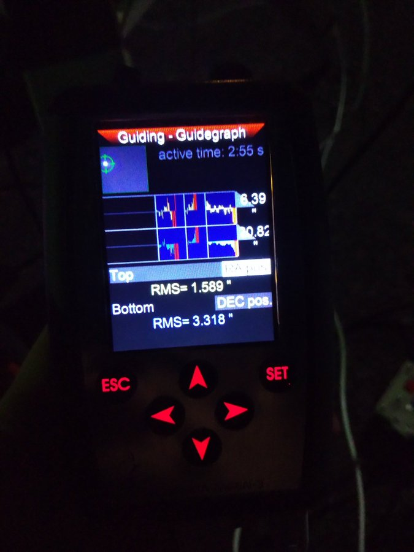
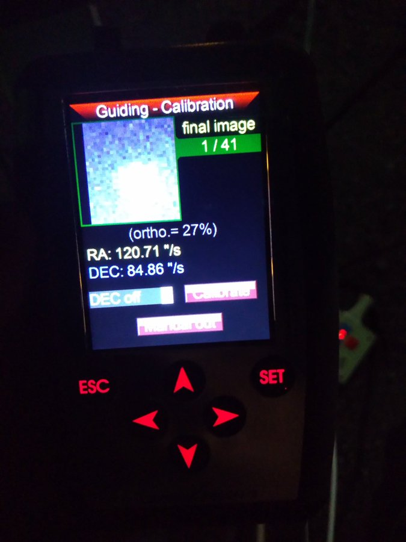
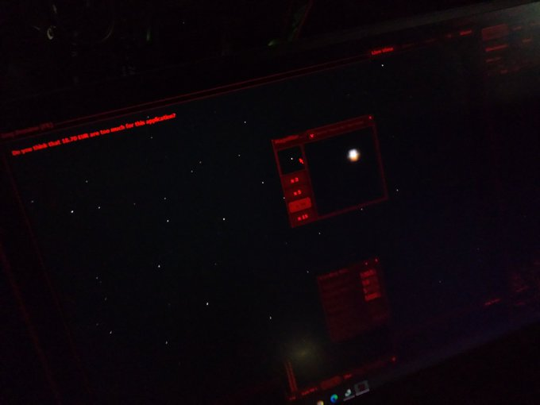
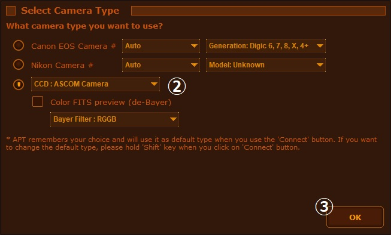
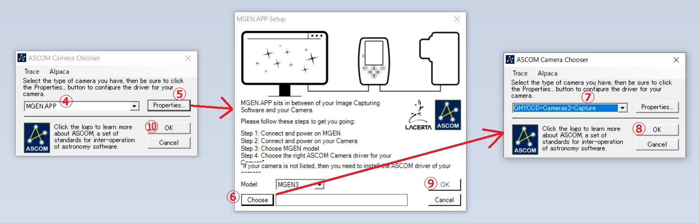
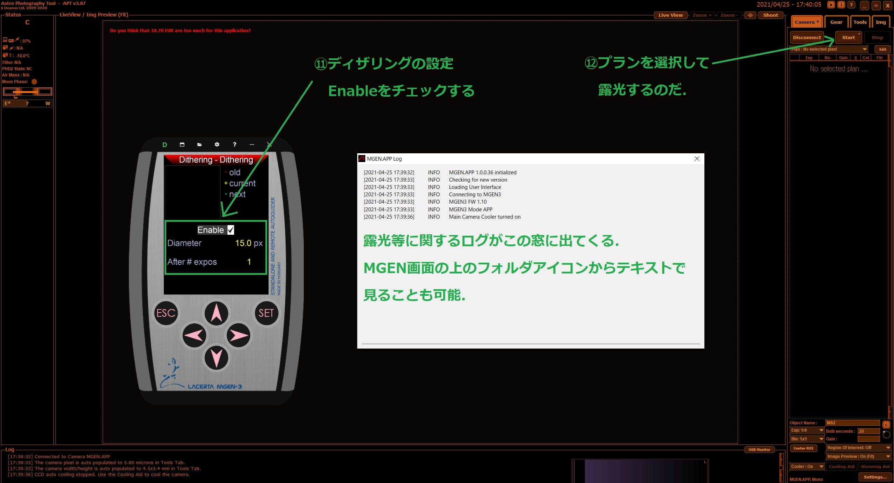
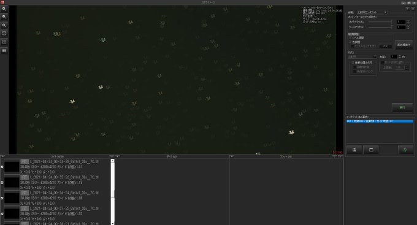
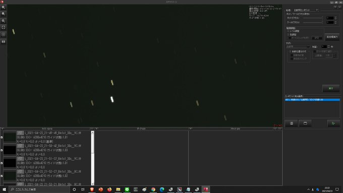

<!DOCTYPE html>
<html>

<head><meta name="generator" content="Hexo 3.8.0">
  <meta charset="utf-8">
  
    <title>
      
        MGEN-3 でのガイドについて | 
            ほしよみ大学生のブログ
    </title>
    <meta name="viewport" content="width=device-width">
    <meta name="description" content="あいさつ前回の冷却CMOSファーストライトでは色々と課題が出てきたのですが，そのうちMGEN については進展がありましたので書いておきます．">
<meta name="keywords" content="写真,天体写真,機材,カメラ,赤道儀">
<meta property="og:type" content="article">
<meta property="og:title" content="MGEN-3 でのガイドについて">
<meta property="og:url" content="http://dabokun.github.io/2021/04/25/00000051-mgen-3-resolved/index.html">
<meta property="og:site_name" content="ほしよみ大学生のブログ">
<meta property="og:description" content="あいさつ前回の冷却CMOSファーストライトでは色々と課題が出てきたのですが，そのうちMGEN については進展がありましたので書いておきます．">
<meta property="og:locale" content="ja">
<meta property="og:image" content="http://dabokun.github.io/2021/04/25/00000051-mgen-3-resolved/card.jpg">
<meta property="og:updated_time" content="2021-06-07T18:14:52.292Z">
<meta name="twitter:card" content="summary_large_image">
<meta name="twitter:title" content="MGEN-3 でのガイドについて">
<meta name="twitter:description" content="あいさつ前回の冷却CMOSファーストライトでは色々と課題が出てきたのですが，そのうちMGEN については進展がありましたので書いておきます．">
<meta name="twitter:image" content="http://dabokun.github.io/2021/04/25/00000051-mgen-3-resolved/card.jpg">
<meta name="twitter:creator" content="@astrodabo">
      
        <link rel="alternative" href="/atom.xml" title="ほしよみ大学生のブログ" type="application/atom+xml">
        
          
            <link rel="icon" href="/images/favicon.png">
            
              <link rel="stylesheet" href="/css/style.css">
                <!--[if lt IE 9]><script src="//html5shiv.googlecode.com/svn/trunk/html5.js"></script><![endif]-->
                
                  <script data-ad-client="ca-pub-1350688970555904" async src="https://pagead2.googlesyndication.com/pagead/js/adsbygoogle.js"></script>
</head></html>
<body>
  <div id="container">
    <div class="mobile-nav-panel">
	<i class="icon-reorder icon-large"></i>
</div>
<header id="header">
	<h1 class="blog-title">
		<a href="/">
			ほしよみ大学生のブログ
		</a>
	</h1>
	<nav class="nav">
		<ul>
			
				<li><a href="/">
						Home
					</a></li>
				
				<li><a href="/categories">
						Categories
					</a></li>
				
				<li><a href="/tags">
						Tags
					</a></li>
				
				<li><a href="/archives">
						Archives
					</a></li>
				
				<li><a href="/about">
						About
					</a></li>
				
				<li><a href="/work">
						Work
					</a></li>
				
					<li><a id="nav-search-btn" class="nav-icon" title="Search"></a></li>
					<li><a href="https://github.com/dabokun"></a>
					</li>
					<li><a href="https://twitter.com/astrodabo"></a></li>
					
						<li><a href="/atom.xml" id="nav-rss-link" class="nav-icon" title="RSS Feed"></a>
						</li>
						
		</ul>
	</nav>
	<div id="search-form-wrap">
		<form action="//google.com/search" method="get" accept-charset="UTF-8" class="search-form"><input type="search" name="q" class="search-form-input" placeholder="Search"><button type="submit" class="search-form-submit">&#xF002;</button><input type="hidden" name="sitesearch" value="http://dabokun.github.io"></form>
	</div>
</header>

    <div id="main">
      <article id="post-00000051-mgen-3-resolved" class="post">
	<footer class="entry-meta-header">
		<span class="meta-elements date">
			<a href="/2021/04/25/00000051-mgen-3-resolved/" class="article-date">
  <time datetime="2021-04-25T07:22:31.000Z" itemprop="datePublished">2021-04-25</time>
</a>
		</span>
		<span class="meta-elements author">astr0dab0</span>
		<div class="commentscount">
			
			<a href="http://dabokun.github.io/2021/04/25/00000051-mgen-3-resolved/#disqus_thread" class="article-comment-link">Comments</a>
			
		</div>
	</footer>
	
	<header class="entry-header">
		
  
    <h1 class="article-title entry-title" itemprop="name">
      MGEN-3 でのガイドについて
    </h1>
  

	</header>
	<div class="entry-content">
		
		
		<div id="toc" class="toc-article">
			<p class="toc-title">目次</p>
			<ol class="toc"><li class="toc-item toc-level-3"><a class="toc-link" href="#あいさつ"><span class="toc-number">1.</span> <span class="toc-text">あいさつ</span></a></li><li class="toc-item toc-level-3"><a class="toc-link" href="#MGEN-3-でのガイド"><span class="toc-number">2.</span> <span class="toc-text">MGEN-3 でのガイド</span></a></li><li class="toc-item toc-level-3"><a class="toc-link" href="#MGEN-3-でのディザリング"><span class="toc-number">3.</span> <span class="toc-text">MGEN-3 でのディザリング</span></a><ol class="toc-child"><li class="toc-item toc-level-4"><a class="toc-link" href="#ディザリングの利用手順"><span class="toc-number">3.1.</span> <span class="toc-text">ディザリングの利用手順</span></a></li></ol></li></ol>
		</div>
		
		<h3 id="あいさつ"><a href="#あいさつ" class="headerlink" title="あいさつ"></a>あいさつ</h3><p>前回の冷却CMOSファーストライトでは色々と課題が出てきたのですが，そのうちMGEN については進展がありましたので書いておきます．</p>
<a id="more"></a>
<h3 id="MGEN-3-でのガイド"><a href="#MGEN-3-でのガイド" class="headerlink" title="MGEN-3 でのガイド"></a>MGEN-3 でのガイド</h3><p>さて，MGEN がこれまでうまくガイドをしなかった理由は本当にしょうもないものでした．<br>ある時，自宅近辺でガイドのテストをしたい（この直前に美ヶ原で生じた追尾エラーの検証，この遠征についてはまた別記事で）と思い，家から車で30秒の公園で機材を広げて練習していたところ，やはりガイドはうまくいきません．</p>
<p>毎回こんな感じです．</p>
<p>ガイドはじめの数10秒～1,2分はグラフも特に問題ないように見えるのですが，しばらくするとガイド星が吹き飛んでいきガイドをやめてしまいます．<br>うまくいかねーと愚痴りながらTL 上でいろいろな方と話していたとき，私がこのような写真を上げたところ，M&amp;M さんが本質情報を叩き込んでくれました．</p>
<p></p>
<p>上のツイッターにも上げた添付画像に問題があります．<br>さあ，どこが問題かわかりますでしょうか？<br>そう！ここです！！<br>。<br>。<br>。<br>。<br>。<br>。<br>。<br>。<br>。<br>。</p>
<p></p>
<p>私や M&amp;M さんが使用しているタカハシ EM 赤道儀にはこのようなコントローラがついています．よく見るとライトがついているのがお分かりかと思いますが，ここが赤だとモータを高速で駆動するモード，緑だと低速で駆動するモードなのです．これを見つけた M&amp;M さんが次のように指摘．</p>
<div class="twitter-wrapper"><blockquote class="twitter-tweet"><a href="https://twitter.com/656nm_freak/status/1383780262174093315" target="_blank" rel="noopener"></a></blockquote></div><script async defer src="//platform.twitter.com/widgets.js" charset="utf-8"></script>
<p>よくよく考えれば，高速モードでガイドがうまくいかないのは当然です．高速モードなので動かし始めに注目すると最初はゆっくり，だんだんと高速になります．そのような信号→モータ駆動の精度でキャリブレーションがうまくいくはずがなかったのです．オートガイド初心者の私はこのことに全く気づきませんでした．<br>このようなミスはオートガイドあるあるだそうで，M&amp;M さんや他のリアル知り合いの人でも同じミスをした経験のある方が数名いらっしゃいました．<br>低速モードにしてやり直したところ無事ガイドもうまくいき，8分ほぼ点像を成し遂げました．めでたしめでたし．</p>
<p>M&amp;M さんには足を向けて寝られない…．</p>
<p>本当にしょうもない理由でしたが，もう絶対に忘れることはなさそうです．<br><strong>凄まじい観察眼でミスを発見し指摘していただいた M&amp;M さんには本当に感謝しかありません，ありがとうございました．<br>それから，散々 MGEN がうまくいかないと TL で愚痴ってしまって Lacerta さんごめんなさい．私の MGEN はどこも悪くありませんでした．</strong><br>教訓：<font color="red"><b>EM シリーズ赤道儀でのキャリブレーション，オートガイド時は絶対低速モードにすること！</b></font></p>
<h3 id="MGEN-3-でのディザリング"><a href="#MGEN-3-でのディザリング" class="headerlink" title="MGEN-3 でのディザリング"></a>MGEN-3 でのディザリング</h3><p>オートガイドはとりあえずこれでうまくいくことがわかりましたが，次に生じた疑問は「そういえば今の自分の環境でディザリングってどうやるんだろう？そもそもできるんだろうか？」ということです．<br>MGEN の場合，一眼レフであれば専用のカメラケーブルを使うとディザリングを利用したシャッターコントロールまでできるようになるようですが，冷却 CMOS の場合なにかうまいやり方があるのでしょうか．<br>結論から言うと，ありました．</p>
<p>参考になったのは以下の記事です．</p>
<p><a href="https://hiroooo000-blog.hatenablog.com/entry/2020/12/30/001210" target="_blank" rel="noopener">20201229 MGEN.APPでPHD2を使ってPCとMGEN3を接続し、リモート操作できました！</a></p>
<p><a href="https://mgen.app/" target="_blank" rel="noopener">MGEN.APP</a> という ASCOM ドライバを利用することで，MGEN を PC から制御できるようになります．PC から制御できるということは，同じく PC から制御している冷却 CMOS ともコミュニケーションできるんじゃないか？と推測できます．<br>上記の記事では PHD2 を利用していますが，私が利用している APT でもやり方は同じです．<br>以下に手順を書いておきます．</p>
<h4 id="ディザリングの利用手順"><a href="#ディザリングの利用手順" class="headerlink" title="ディザリングの利用手順"></a>ディザリングの利用手順</h4><ol>
<li>MGEN-3 と冷却 CMOS の電源を入れ，両方とも PC に接続します（MGEN-3は電源ケーブルの USB を PC の USB ポートに繋げばOK）．<br></li>
<li>APT の「Connect」から「CCD:ASCOM Camera」を選択します．</li>
<li>OK を選択します．<br></li>
<li>ドライバの選択画面から「MGEN.APP」を選択します．ここでは冷却 CMOS のドライバはまだ選択しません．</li>
<li>MGEN.APP の Properties 画面を開きます．</li>
<li>一番下の Choose から制御したい本撮影用カメラのドライバを選択画面を開きます．</li>
<li>ここで QHYCCD-Cameras2-Capture を選択します．この画面での Properties からは，いつものようにカメラの設定をいじることもできます．</li>
<li>OK を選択して 本撮影用の ASCOM Camera Chooser を閉じます．</li>
<li>Choose の横に選択したカメラドライバ名が出ているはずですので，OK を選択して MGEN.APP Setup を閉じます．</li>
<li>OK を選択して MGEN.APP 用の ASCOM Camera Chooser を閉じます．接続が試行されます．<br></li>
<li>接続に成功すると，APT の本画面の他に MGEN-3 のエミュレータ画面とログ画面も開かれます．PC に表示されている MGEN-3 の画面と MGEN-3 本体は同期しています．どちらからでもいいのでディザリングの設定を開いて，Enable にチェックを入れて適当なパラメタ値を設定します．</li>
<li>これで APT から 露光を Start します．以上です．</li>
</ol>
<p>こんなんでできるのか（APT から追加の設定などはいらないのか）と思いましたが，無事にディザリングできていることを確認できました．</p>
<p><video src="tw01.mp4" width="640" height="360" controls></video><br>30枚でディザリングした結果の比較明合成です．完璧ですね．</p>
<p>これでガイドについては自分が思いつく限りでは完全な撮影体制が整ったと思います．やったぜ．<br>ただ，残念ながらいまのところ「ある枠の中でランダムに散らす」設定しかできないように見えます．以前の MGEN では Square Snake（星を矩形の渦巻状になるように散らす）といった設定も可能でしたが，MGEN-3 ではできないようです．今後のファームウェアアップデートなどで追加されるかもしれません（今のファームウェアバージョンは1.10.2です）．<br>それから，ディザリングもうまくいかないこと（確かに散らしてはいるのですが単一方向にしか動いていないように見える）があるようです．</p>
<p></p>
<p>MGEN の問題ではないかもしれませんが，MGEN-3 ではこれまでどのように星を散らしてきたかの履歴が見れるのでそれを現地で確認したり，コンポジットしてちゃんとできているか確認するのが安全策として有効だと思います．</p>
<p>以上です，それでは！</p>

		
	</div>
	<footer class="article-footer">
		<a href="https://twitter.com/intent/tweet?text=MGEN-3%20%E3%81%A7%E3%81%AE%E3%82%AC%E3%82%A4%E3%83%89%E3%81%AB%E3%81%A4%E3%81%84%E3%81%A6｜%E3%81%BB%E3%81%97%E3%82%88%E3%81%BF%E5%A4%A7%E5%AD%A6%E7%94%9F%E3%81%AE%E3%83%96%E3%83%AD%E3%82%B0&url=http://dabokun.github.io/2021/04/25/00000051-mgen-3-resolved/" class="twitter-share-button" target="_blank" title="Twitter"></a>
		<script async src="https://platform.twitter.com/widgets.js" charset="utf-8"></script>

		<div id="fb-root"></div>
		<script async defer crossorigin="anonymous" src="https://connect.facebook.net/ja_JP/sdk.js#xfbml=1&version=v4.0"></script>
		<div class="fb-share-button" data-href="http://dabokun.github.io/2021/04/25/00000051-mgen-3-resolved/" data-layout="button_count" data-size="small"><a target="_blank" href="https://www.facebook.com/sharer/sharer.php?u=https%3A%2F%2Fdabokun.github.io%2F&amp;src=sdkpreparse" class="fb-xfbml-parse-ignore">シェア</a></div>
	</footer>
	<footer class="entry-footer">
		<div class="entry-meta-footer">
			<span class="category">
				
  <div class="article-category">
    <a class="article-category-link" href="/categories/astrophotography/">天体写真</a>
  </div>

			</span>
			<span class=" tags">
				
  <ul class="article-tag-list"><li class="article-tag-list-item"><a class="article-tag-list-link" href="/tags/camera/">カメラ</a></li><li class="article-tag-list-item"><a class="article-tag-list-link" href="/tags/photography/">写真</a></li><li class="article-tag-list-item"><a class="article-tag-list-link" href="/tags/astrophotography/">天体写真</a></li><li class="article-tag-list-item"><a class="article-tag-list-link" href="/tags/equipments/">機材</a></li><li class="article-tag-list-item"><a class="article-tag-list-link" href="/tags/mount/">赤道儀</a></li></ul>

			</span>
		</div>
	</footer>
	
	
<nav id="article-nav">
  
    <a href="/2021/06/07/00000053-2021-04-utsukushi/" id="article-nav-newer" class="article-nav-link-wrap">
      <strong class="article-nav-caption">Newer</strong>
      <div class="article-nav-title">
        
          【遠征記】2021年4月 美ヶ原
        
      </div>
    </a>
  
  
    <a href="/2021/03/28/00000050-qhy268c-first/" id="article-nav-older" class="article-nav-link-wrap">
      <strong class="article-nav-caption">Older</strong>
      <div class="article-nav-title">
        
          QHY268C ファーストライト
        
      </div>
    </a>
  
</nav>

	
</article>


<section id="comments">
	<div id="disqus_thread">
		<noscript>Please enable JavaScript to view the <a href="//disqus.com/?ref_noscript">comments powered by
				Disqus.</a></noscript>
	</div>
</section>

    </div>
    <div class="mb-search">
  <form action="//google.com/search" method="get" accept-charset="utf-8">
    <input type="search" name="q" results="0" placeholder="Search">
    <input type="hidden" name="q" value="site:dabokun.github.io">
  </form>
</div>
<footer id="footer">
	<h1 class="footer-blog-title">
		<a href="/">ほしよみ大学生のブログ</a>
	</h1>
	<span class="copyright">
		&copy; 2022 astr0dab0<br>
		Modify from <a href="http://sanographix.github.io/tumblr/apollo/" target="_blank">Apollo</a> theme, designed by <a href="http://www.sanographix.net/" target="_blank">SANOGRAPHIX.NET</a><br>
		Powered by <a href="http://hexo.io/" target="_blank">Hexo</a>
	</span>
</footer>
    
<script>
  var disqus_shortname = 'astr0dab0';
  
  var disqus_url = 'http://dabokun.github.io/2021/04/25/00000051-mgen-3-resolved/';
  
  (function(){
    var dsq = document.createElement('script');
    dsq.type = 'text/javascript';
    dsq.async = true;
    dsq.src = '//go.disqus.com/embed.js';
    (document.getElementsByTagName('head')[0] || document.getElementsByTagName('body')[0]).appendChild(dsq);
  })();
</script>


<script src="//ajax.googleapis.com/ajax/libs/jquery/2.0.3/jquery.min.js"></script>


<link rel="stylesheet" href="/fancybox/jquery.fancybox.css" media="screen" type="text/css">
<script src="/fancybox/jquery.fancybox.pack.js"></script>


<script src="/js/script.js"></script>
  </div>
</body>
</html>